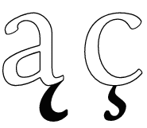

La Mezepoka formo de tiu litero: ℨ, plu vivas en manskribo kaj en kombinoj (kp sozo, zoeto).
1996-11-01
Obloprefikso kies norma valoro estas 1000⁷ (1e21), sed kies komputika valoro povas esti 1024⁷ = 270 Mallongigo: Z.
Angle: zetta
1996-09-06
 Diakritilo en formo de ʒ (historie,
manskriba z), aperanta sub kelkaj Latinaj literoj konsonantaj (ekz-e
Ç←C₃) por ŝanĝi ilian valoron fonetikan.
Diakritilo en formo de ʒ (historie,
manskriba z), aperanta sub kelkaj Latinaj literoj konsonantaj (ekz-e
Ç←C₃) por ŝanĝi ilian valoron fonetikan.
En la Latina-3a tiu speciala signo (¸) havas la kodonon 184=16uB8. Kp ankaŭ Ç (199), ç (231).
En Unikodo troveblas pluraj aliaj literoj kun zoeto (vd La Unikoda paĝo Eŭrope Latina) — speciale interesa estas ģ (g kun superkomo).
Fakte la normoj iom misprezentas la aferon. En kelkaj lingvoj (ekz-e, en la latva, la rumana) la diakritilo modifanta la literojn GKLNR / ST estas subkomo, kvankam en aliaj (ekz-e en la turka) oni efektive uzas zoeton (malgrandan skribeskan z, kp la hispanan «zedilla») ĉe ST / C. Kp subkomo, superkomo.
 Aliflanke, oni ne konfuzu zoeton kun vosteto, kiu aperas sub Latinaj literoj vokalaj.
Noto. La PIV1-a formo estas konfuziva (ced-ilo), dum la natura traduko de la hispana nomo estas radikŝpara kaj senambigua (ced+illa = zed+illa estas la nomo de la litero zo + diminutiva sufikso).
Angle: cedilla
France: cédille
Hispane: cedilla, zedilla [sediʎa]
Ruse:
седиль
1996-11-03
Noto. La vorto estas motivita per responda termino kinarta [SPIV]:
zom·o 2En komputado la «malpligrandigon» oni preferus esprimi per «malzomi».Efekto de proksimiĝo aŭ malproksimiĝo, dank' al speciala objektivo, kiu ebligas variigi la planojn sen movo de la kamerao.
Angle: zoom, zoom in
Ruse: накатиться, развернуть,
распахнуть окно
1996-02-29
Parto de ekrano, tabelo, formular[i]o, printaĵo aŭ datumportilo havanta specialan funkcion. Kp kampo, tabo.
Angle: field
France: champ, zone
Ruse: зона
1996-02-29